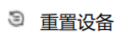
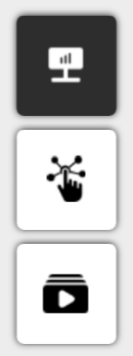

四、界面与交互
4.1 选择传感器
图 1 数采控制区
当前数采控制区的“选择传感器”选项下，可实时监测传感器多模态感知信息，且支持对传感器反馈信息进行录制，以便后期“打开数据流”进行回溯，复盘，分析。
图 2 设备选择区
软件支持同时连接多路传感器，并可以在各传感器之间快速切换。 设备选择区可显示所有传感器名称，通过单击 ， 从已检测到的传感器列表快速切换至目标传感器，并将其采集信息显示在可视化区域中。
4.1.1 传感器状态提示
 :表示设备已上线
:表示设备已上线
 :表示传感器异常，鼠标悬浮会显示异常信息（传感器config文件读取失败）。
:表示传感器异常，鼠标悬浮会显示异常信息（传感器config文件读取失败）。
拔掉/插入传感器后，需要点击  ，重新扫描传感器。
4.1.2 感知模态配置

.png)
.png)
.png)
.png)

{kind=link}
{kind=link}
{kind=link}
{kind=link}
{kind=link}
{kind=link}
图 3 感知模态配置区
4.1.3 视图切换

图 4 视图切换
视图切换可实现传感器反馈的触觉及接触力信息在二维平面与三维立体空间的灵活转换，并以触觉图像、接触力、曲面变形场等多模态形式予以呈现
{kind=link}
触觉图像信息失真时，或遇到传感器数据滞留时，在空载情况下点击正下方 校准按钮， 可以重新校准传感器，以刷新显示。
{kind=link}
{kind=link}
三维视图上的箭头，即为接触力重建的结果箭头方向表示力的方向，箭头的长度表示力的大小，箭头之下的曲面部分， 显示了接触变形场的感知结果。二维视图下，由于可视化维度的限制，只显示曲面变形场。
4.2 打开数据流
在数采控制区点击“打开数据流”，点击 ，可以加载之前录制的数据流文件。加载以后，软件将循环展示从数据流文件中获取的信息，并展示计算结果。
传感器选择区显示保存的数据流文件名称  ，虚拟传感器的名称来自数据流文件名。加载数据流以后，详见3.1默认模式和接触力模式，但没有录制模式。
感知模式配置可参考3.1.2（
，虚拟传感器的名称来自数据流文件名。加载数据流以后，详见3.1默认模式和接触力模式，但没有录制模式。
感知模式配置可参考3.1.2（ .png) /
/ .png) 录制），视图切换可参考3.1.3。
录制），视图切换可参考3.1.3。
{kind=link}
4.3 工具栏
{kind=link}
图 7 工具栏
 主题切换：点击可选择界面主题
主题切换：点击可选择界面主题
 帮助：打开帮助文档、常见问题解答
帮助：打开帮助文档、常见问题解答
{kind=link}
{kind=link}
{kind=link}